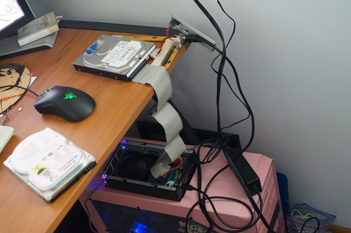
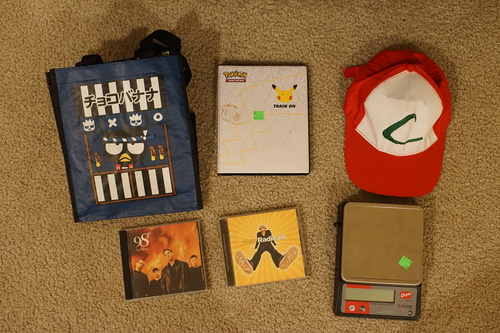

A few days ago, I got word my friend had a baby! Congratulations to lil baby Mabel! May you grow up happy and healthy!

Last time I was at my mom's house, she told me our old family computer was fried and that my sister's father in law wanted to toss the whole thing. Excuse me?!
So time was of the essence before the computer I spent years using disappeared. I took the leaf blower to the chassis (fun) and then took it back up to my old bedroom to see how fried it actually was.
I was surprised to see he was right. I left my room to go grab something and halfway down the stairs I hear THIS from my keyboard. My best guess from this paranormal activity is the PSU is hecked, but I feel no need to save the whole computer. The files are good enough for me.
I realized I had nothing else with an IDE connector in the house, so I packed up the HDD and brought it back with me.
My first and simplest plan was to plug it into the computer Ryan bought in blog 98 and back it up. This plan worked... at the speed of snails. I know, I know. I could have left it overnight and it would be done by now. It just made the awful old fan sound and was so slow and
So I pulled out my super janky IDE to USB 2.0 connector. I had already been sorting through my various cables that day and found a PS/2 power supply. What in the literal heck uses PS/2 as a power source?? I had already thrown it in the toss pile when I pulled out the IDE to USB 2.0 board and sure enough, I would have regretted tossing this one.
I got it to work for one of Ryan's IDE drives that was sitting around, but mine is giving me trouble. I've tried it on master, slave, cable select. I also tried it with a external HDD case I have that has an IDE slot, but I don't have the older power connector so I hooked it up to the other janky board and my desk is a disaster. Eventually, I got win7 to detect it and was able to copy most of the files off it in about half an hour.
I recall seeing a folder with my name on it during my initial look through I don't see it in my archive. I will have to go back in.
I'm not sure she charged me for this??
decorated with Frozen 2 stickers on the back
Bootleg? I'm not sure. Ryan wanted it.
I don't know anything about this boy band and I decided it's time to find out. So far, it sounds like a boy band.
I have.
I thought it was precise to .1g but it's only precise to .5g
sux